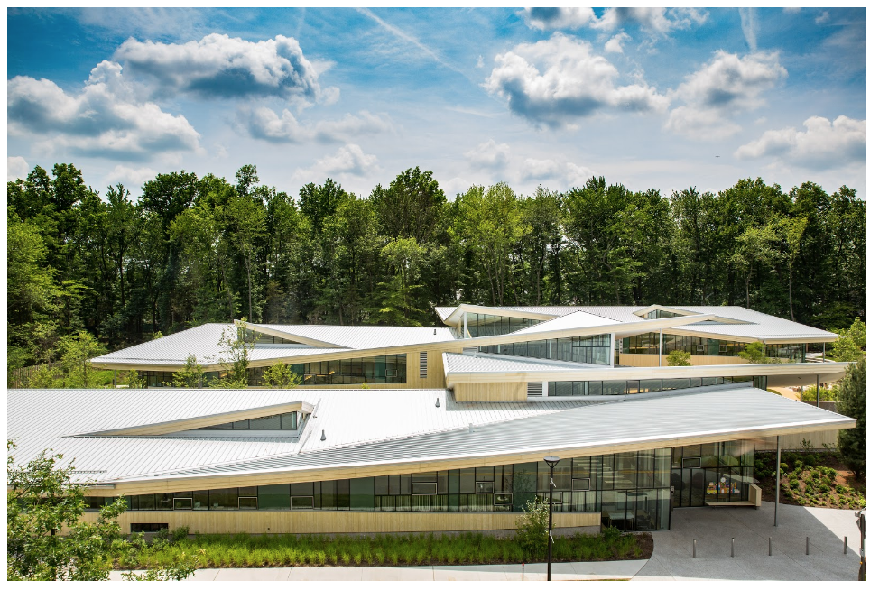

Wodiczko + Bonder/Maryann Thompson Architects, is an artistic and design partnership with a combined experience that ranges from temporary work such as design of participatory projections on monument and communicative urban equipment to design of residential, cultural and civic buildings, institutes, museums, memorials and commemorative public spaces.
Our work is based on a profound commitment to the advancement of democratic vitality and cultural and pedagogical value of public space through the creation of new transformative and communicative art, architecture and design.
As our psycho-political and ethical companions, contemporary Monuments and Memorials have as historic destiny to preserve the memory of the past and provide conditions for new responses. As we renew our commitment to continue the struggle for Human and Civil Rights for the 21st century, and in the face of the repetition of historic traumas, human injustices such as present-day mass incarceration, oppression, continued violence against minorities and immigrants, we understand the Martin Luther King Memorial in Boston as a genuine call for action and pro-active engagement for future generations.
Our concepts and proposals will be carefully studied to respectfully re-inscribe potential sites into the cognitive map of Boston, as well as its cultural, political and physical landscape. Having designed, among many other temporary and permanent projects, the Memorial to the Abolition of Slavery in Nantes, we, as a cross-disciplinary team, are able to tackle the issue of how such sites and how design, art and architecture can contribute to an expanded and transformative notion of the public domain.
Image is courtesy of the artist, Krzysztof Wodiczko.
Courtesy of the artists, Wodiczko + Bonder, image by Philippe Ruault.

Courtesy of Maryann Thompson Architects, image by Jeremy Bittermann.